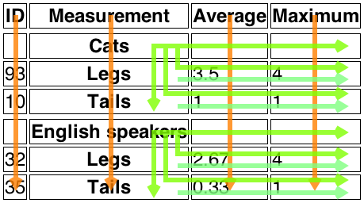

4.9. Tabular data
4.9.1. The table#elementdef-tableReferenced in:1.10.2. Syntax errors3.2.4.2.2. Flow content3.2.4.2.8. Palpable content4.4.1. The p element4.9.1. The table element (2) (3) (4) (5) (6) (7) (8) (9) (10) (11) (12) (13) (14) (15) (16) (17) (18) (19) (20) (21) (22) (23) (24) (25) (26) (27) (28)4.9.2. The caption element (2) (3) (4)4.9.3. The colgroup element (2)4.9.4. The col element4.9.5. The tbody element (2) (3) (4)4.9.6. The thead element (2) (3) (4)4.9.7. The tfoot element (2) (3) (4)4.9.8. The tr element (2) (3) (4) (5) (6) (7)4.9.12. Processing model4.9.12.1. Forming a table (2) (3) (4) (5) (6) (7) (8) (9) (10)4.12.3. The template element8.1.2.4. Optional tags8.1.2.5. Restrictions on content models (2)8.2.3.1. The insertion mode8.2.3.2. The stack of open elements (2) (3)8.2.5.1. Creating and inserting nodes (2) (3)8.2.5.4.9. The "in table" insertion mode (2) (3) (4)8.2.8.3. Unexpected markup in tables (2) (3) (4) (5) (6) (7) (8) (9) (10) (11) (12) (13) (14)10.3.9. Tables (2) (3) (4) (5) (6) (7) (8) (9) (10) (11) (12) (13)11.2. Non-conforming features (2) (3) (4) (5) (6) (7) (8) (9) (10) (11) (12) (13) (14) (15) (16)11.3.4. Other elements, attributes and APIs (2) (3) (4)Elements (2) (3) (4) (5) (6) (7)Element content categories (2)Attributes (2)Element Interfaces element
- Categories:
- Flow content.
- Palpable content.
- Contexts in which this element can be used:
- Where flow content is expected.
- Content model:
- In this order: optionally a
captionelement, followed by zero or morecolgroupelements, followed optionally by atheadelement, followed by either zero or moretbodyelements or one or moretrelements, followed optionally by atfootelement, optionally intermixed with one or more script-supporting elements. - Tag omission in text/html:
- Neither tag is omissible
- Content attributes:
- Global attributes
border - Allowed ARIA role attribute values:
- Any role value.
- Allowed ARIA state and property attributes:
- Global aria-* attributes
- Any
aria-*attributes applicable to the allowed roles. - Any
- DOM interface:
-
interface HTMLTableElement#htmltableelement-htmltableelementReferenced in:11.3.4. Other elements, attributes and APIsElementsElement Interfaces : HTMLElement { attribute HTMLTableCaptionElement? caption; HTMLTableCaptionElement createCaption(); void deleteCaption(); attribute HTMLTableSectionElement? tHead; HTMLTableSectionElement createTHead(); void deleteTHead(); attribute HTMLTableSectionElement? tFoot; HTMLTableSectionElement createTFoot(); void deleteTFoot(); [SameObject] readonly attribute HTMLCollection tBodies; HTMLTableSectionElement createTBody(); [SameObject] readonly attribute HTMLCollection rows; HTMLTableRowElement insertRow(optional long index = -1); void deleteRow(long index); };
The table element represents data with more than one dimension, in
the form of a table.
The table element takes part in the table
model. Tables have rows, columns, and cells given by their descendants. The rows and
columns form a grid; a table’s cells must completely cover that grid without overlap.
Precise rules for determining whether this conformance requirement is met are described in the description of the table model.
Authors are encouraged to provide information describing how to interpret complex tables. Guidance on how to provide such information is given below.
Tables should not be used as layout aids.
Historically, many Web authors have tables in HTML as a way to control their page layout making it difficult to extract tabular data from such documents.
In particular, users of accessibility tools, like screen readers, are likely to find it very difficult to navigate pages with tables used for layout.
If a table is to be used for layout it must be marked with the
attribute role="presentation" for a
user agent to properly represent the table to an assistive technology and to properly convey the
intent of the author to tools that wish to extract tabular data from
the document.
There are a variety of alternatives to using HTML tables for layout, primarily using CSS positioning and the CSS table model. [CSS-2015]
The border content attribute may be specified on a table element to
explicitly indicate that the table element is not being
used for layout purposes. If specified, the attribute’s value must
either be the empty string or the value "1".
The attribute is used by certain user agents as an indication that
borders should be drawn around cells of the table.
Tables can be complicated to understand and navigate. To help users with this, user agents should clearly delineate cells in a table from each other, unless the user agent has classified the table as a layout table.
Authors and implementors are encouraged to consider using some of the table design techniques described below to make tables easier to navigate for users.
User agents, especially those that do table analysis on arbitrary content, are encouraged to find heuristics to determine which tables actually contain data and which are merely being used for layout. This specification does not define a precise heuristic, but the following are suggested as possible indicators:
| Feature | Indication |
|---|---|
The use of the role attribute with the value presentation
| Probably a layout table |
The use of the non-conforming border attribute with the non-conforming value 0
| Probably a layout table |
The use of the non-conforming cellspacing and cellpadding attributes with the value 0
| Probably a layout table |
The use of caption, thead, or th elements
| Probably a non-layout table |
The use of the headers and scope attributes
| Probably a non-layout table |
The use of the non-conforming border attribute with a value other than 0
| Probably a non-layout table |
| Explicit visible borders set using CSS | Probably a non-layout table |
The use of the summary attribute
| Not a good indicator (both layout and non-layout tables have historically been given this attribute) |
It is quite possible that the above suggestions are wrong. Implementors are urged to provide feedback elaborating on their experiences with trying to create a layout table detection heuristic.
If a table element has a (non-conforming) summary attribute, and the user agent has not classified the
table as a layout table, the user agent may report the contents of that attribute to the user.
- table .
caption[ = value ] -
Returns the table’s
captionelement.Can be set, to replace the
captionelement. - caption = table .
createCaption() -
Ensures the table has a
captionelement, and returns it. - table .
deleteCaption() -
Ensures the table does not have a
captionelement. - table .
tHead[ = value ] -
Returns the table’s
theadelement.Can be set, to replace the
theadelement. If the new value is not atheadelement, throws aHierarchyRequestErrorexception. - thead = table .
createTHead() -
Ensures the table has a
theadelement, and returns it. - table .
deleteTHead() -
Ensures the table does not have a
theadelement. - table .
tFoot[ = value ] -
Returns the table’s
tfootelement.Can be set, to replace the
tfootelement. If the new value is not atfootelement, throws aHierarchyRequestErrorexception. - tfoot = table .
createTFoot() -
Ensures the table has a
tfootelement, and returns it. - table .
deleteTFoot() -
Ensures the table does not have a
tfootelement. - table .
tBodies -
Returns an
HTMLCollectionof thetbodyelements of the table. - tbody = table .
createTBody() -
Creates a
tbodyelement, inserts it into the table, and returns it. - table .
rows -
Returns an
HTMLCollectionof thetrelements of the table. - tr = table .
insertRow( [ index ] ) -
Creates a
trelement, along with atbodyif required, inserts them into the table at the position given by the argument, and returns thetr.The position is relative to the rows in the table. The index -1, which is the default if the argument is omitted, is equivalent to inserting at the end of the table.
If the given position is less than -1 or greater than the number of rows, throws an
IndexSizeErrorexception. - table .
deleteRow(index) -
Removes the
trelement with the given position in the table.The position is relative to the rows in the table. The index -1 is equivalent to deleting the last row of the table.
If the given position is less than -1 or greater than the index of the last row, or if there are no rows, throws an
IndexSizeErrorexception.
The caption#dom-htmltableelement-captionReferenced in:4.9.1. The table element IDL attribute must return, on
getting, the first caption element child of the table element, if any,
or null otherwise. On setting, the first caption element child of the table element, if any, must be removed, and the new value, if not null, must be
inserted as the first node of the table element.
The createCaption()#dom-htmltableelement-createcaptionReferenced in:4.9.1. The table element method must return
the first caption element child of the table element, if any; otherwise
a new caption element must be created, inserted as the first node of the table element, and then returned.
The deleteCaption()#dom-htmltableelement-deletecaptionReferenced in:4.9.1. The table element method must remove
the first caption element child of the table element, if any.
The tHead#dom-htmltableelement-theadReferenced in:4.9.1. The table element IDL attribute must return, on
getting, the first thead element child of the table element, if any, or
null otherwise. On setting, if the new value is null or a thead element, the first thead element child of the table element, if any, must be removed, and
the new value, if not null, must be inserted immediately before the first element in the table element that is neither a caption element nor a colgroup element, if any, or at the end of the table if there are no such elements.
If the new value is neither null nor a thead element, then a HierarchyRequestError DOM exception must be thrown instead.
The createTHead()#dom-htmltableelement-createtheadReferenced in:4.9.1. The table element method must return the
first thead element child of the table element, if any; otherwise a new thead element must be created and inserted immediately before the first element in
the table element that is neither a caption element nor a colgroup element, if any, or at the end of the table if there are no such elements,
and then that new element must be returned.
The deleteTHead()#dom-htmltableelement-deletetheadReferenced in:4.9.1. The table element method must remove the
first thead element child of the table element, if any.
The tFoot#dom-htmltableelement-tfootReferenced in:4.9.1. The table element IDL attribute must return, on
getting, the first tfoot element child of the table element, if any, or
null otherwise. On setting, if the new value is null or a tfoot element, the first tfoot element child of the table element, if any, must be removed, and
the new value, if not null, must be inserted at the end of the table. If the new value is neither
null nor a tfoot element, then a HierarchyRequestError DOM exception
must be thrown instead.
The createTFoot()#dom-htmltableelement-createtfootReferenced in:4.9.1. The table element method must return the
first tfoot element child of the table element, if any; otherwise a new tfoot element must be created and inserted at the end of the table, and then that new
element must be returned.
The deleteTFoot()#dom-htmltableelement-deletetfootReferenced in:4.9.1. The table element method must remove the
first tfoot element child of the table element, if any.
The tBodies#dom-htmltableelement-tbodiesReferenced in:4.9.1. The table element attribute must return an HTMLCollection rooted at the table node, whose filter matches only tbody elements that are children of the table element.
The createTBody()#dom-htmltableelement-createtbodyReferenced in:4.9.1. The table element method must create a
new tbody element, insert it immediately after the last tbody element
child in the table element, if any, or at the end of the table element
if the table element has no tbody element children, and then must return
the new tbody element.
The rows#dom-htmltableelement-rowsReferenced in:4.9.1. The table element attribute must return an HTMLCollection rooted at the table node, whose filter matches only tr elements that are either children of the table element, or children
of thead, tbody, or tfoot elements that are themselves
children of the table element. The elements in the collection must be ordered such
that those elements whose parent is a thead are included first, in tree order,
followed by those elements whose parent is either a table or tbody element, again in tree order, followed finally by those elements whose parent is a tfoot element, still in tree order.
The behavior of the insertRow(index)#dom-htmltableelement-insertrowReferenced in:4.9.1. The table element method depends on the state of the table. When it is called,
the method must act as required by the first item in the following list of conditions that
describes the state of the table and the index argument:
- If index is less than -1 or greater than the number of elements
in
rowscollection: - The method must throw an
IndexSizeErrorexception. - If the
rowscollection has zero elements in it, and thetablehas notbodyelements in it: - The method must create a
tbodyelement, then create atrelement, then append thetrelement to thetbodyelement, then append thetbodyelement to thetableelement, and finally return thetrelement. - If the
rowscollection has zero elements in it: - The method must create a
trelement, append it to the lasttbodyelement in the table, and return thetrelement. - If index is -1 or equal to the number of items in
rowscollection: - The method must create a
trelement, and append it to the parent of the lasttrelement in therowscollection. Then, the newly createdtrelement must be returned. - Otherwise:
- The method must create a
trelement, insert it immediately before the indexthtrelement in therowscollection, in the same parent, and finally must return the newly createdtrelement.
When the deleteRow(index)#dom-htmltableelement-deleterowReferenced in:4.9.1. The table element method is called, the user agent must run the following
steps:
- If index is equal to -1, then index must be
set to the number of items in the
rowscollection, minus one. - Now, if index is less than zero, or greater than or equal to the
number of elements in the
rowscollection, the method must instead throw anIndexSizeErrorexception, and these steps must be aborted. - Otherwise, the method must remove the indexth element in the
rowscollection from its parent.
<section> <h1>Today’s Sudoku</h1> <table> <colgroup><col><col><col> <colgroup><col><col><col> <colgroup><col><col><col> <tbody> <tr> <td> 1 <td> <td> 3 <td> 6 <td> <td> 4 <td> 7 <td> <td> 9 <tr> <td> <td> 2 <td> <td> <td> 9 <td> <td> <td> 1 <td> <tr> <td> 7 <td> <td> <td> <td> <td> <td> <td> <td> 6 <tbody> <tr> <td> 2 <td> <td> 4 <td> <td> 3 <td> <td> 9 <td> <td> 8 <tr> <td> <td> <td> <td> <td> <td> <td> <td> <td> <tr> <td> 5 <td> <td> <td> 9 <td> <td> 7 <td> <td> <td> 1 <tbody> <tr> <td> 6 <td> <td> <td> <td> 5 <td> <td> <td> <td> 2 <tr> <td> <td> <td> <td> <td> 7 <td> <td> <td> <td> <tr> <td> 9 <td> <td> <td> 8 <td> <td> 2 <td> <td> <td> 5 </table> </section>
4.9.1.1. Techniques for describing tables#provide-such-informationReferenced in:4.9.1. The table element (2)
For tables that consist of more than just a grid of cells with headers in the first row and headers in the first column, and for any table in general where the reader might have difficulty understanding the content, authors should include explanatory information introducing the table. This information is useful for all users, but is especially useful for users who cannot see the table, e.g., users of screen readers.
Such explanatory information should introduce the purpose of the table, outline its basic cell structure, highlight any trends or patterns, and generally teach the user how to use the table.
For instance, the following table:
| Negative | Characteristic | Positive |
|---|---|---|
| Sad | Mood | Happy |
| Failing | Grade | Passing |
...might benefit from a description explaining the way the table is laid out, something like "Characteristics are given in the second column, with the negative side in the left column and the positive side in the right column".
There are a variety of ways to include this information, such as:
- In prose, surrounding the table
-
<p id="summary">In the following table, characteristics are given in the second column, with the negative side in the left column and the positive side in the right column.</p> <table aria-describedby="summary"> <caption>Characteristics with positive and negative sides</caption> <thead> <tr> <th id="n"> Negative <th> Characteristic <th> Positive <tbody> <tr> <td headers="n r1"> Sad <th id="r1"> Mood <td> Happy <tr> <td headers="n r2"> Failing <th id="r2"> Grade <td> Passing </table>
In the example above the
aria-describedbyattribute is used to explicitly associate the information with the table for assistive technology users. - In the table’s
caption -
<table> <caption> <strong>Characteristics with positive and negative sides.</strong> <p>Characteristics are given in the second column, with the negative side in the left column and the positive side in the right column.</p> </caption> <thead> <tr> <th id="n"> Negative <th> Characteristic <th> Positive <tbody> <tr> <td headers="n r1"> Sad <th id="r1"> Mood <td> Happy <tr> <td headers="n r2"> Failing <th id="r2"> Grade <td> Passing </table> - In the table’s
caption, in adetailselement -
<table> <caption> <strong>Characteristics with positive and negative sides.</strong> <details> <summary>Help</summary> <p>Characteristics are given in the second column, with the negative side in the left column and the positive side in the right column.</p> </details> </caption> <thead> <tr> <th id="n"> Negative <th> Characteristic <th> Positive <tbody> <tr> <td headers="n r1"> Sad <th id="r1"> Mood <td> Happy <tr> <td headers="n r2"> Failing <th id="r2"> Grade <td> Passing </table> - Next to the table, in the same
figure -
<figure> <figcaption>Characteristics with positive and negative sides</figcaption> <p>Characteristics are given in the second column, with the negative side in the left column and the positive side in the right column.</p> <table> <thead> <tr> <th id="n"> Negative <th> Characteristic <th> Positive <tbody> <tr> <td headers="n r1"> Sad <th id="r1"> Mood <td> Happy <tr> <td headers="n r2"> Failing <th id="r2"> Grade <td> Passing </table> </figure> - Next to the table, in a
figure’sfigcaption -
<figure> <figcaption> <strong>Characteristics with positive and negative sides</strong> <p>Characteristics are given in the second column, with the negative side in the left column and the positive side in the right column.</p> </figcaption> <table> <thead> <tr> <th id="n"> Negative <th> Characteristic <th> Positive <tbody> <tr> <td headers="n r1"> Sad <th id="r1"> Mood <td> Happy <tr> <td headers="n r2"> Failing <th id="r2"> Grade <td> Passing </table> </figure>
Authors may also use other techniques, or combinations of the above techniques, as appropriate.
The best option, of course, rather than writing a description explaining the way the table is laid out, is to adjust the table such that no explanation is needed.
headers attributes:
<table> <caption>Characteristics with positive and negative sides</caption> <thead> <tr> <th> Characteristic <th> Negative <th> Positive <tbody> <tr> <th> Mood <td> Sad <td> Happy <tr> <th> Grade <td> Failing <td> Passing </table>
4.9.1.2. Techniques for table design
Good table design is key to making tables more readable and usable.
In visual media, providing column and row borders and alternating row backgrounds can be very effective to make complicated tables more readable.
For tables with large volumes of numeric content, using monospaced fonts can help users see patterns, especially in situations where a user agent does not render the borders. (Unfortunately, for historical reasons, not rendering borders on tables is a common default.)
In speech media, table cells can be distinguished by reporting the corresponding headers before reading the cell’s contents, and by allowing users to navigate the table in a grid fashion, rather than serializing the entire contents of the table in source order.
Authors are encouraged to use CSS to achieve these effects.
User agents are encouraged to render tables using these techniques whenever the page does not use CSS and the table is not classified as a layout table.
4.9.2. The caption#elementdef-captionReferenced in:4.9.1. The table element (2) (3) (4) (5) (6) (7) (8) (9) (10) (11) (12) (13)4.9.1.1. Techniques for describing tables4.9.2. The caption element (2) (3)4.9.3. The colgroup element4.9.5. The tbody element4.9.6. The thead element4.9.7. The tfoot element4.9.8. The tr element4.9.12. Processing model4.9.12.1. Forming a table (2)4.13.5. Footnotes8.1.2.4. Optional tags (2)8.2.3.1. The insertion mode8.2.3.2. The stack of open elements (2)8.2.5.3. Closing elements that have implied end tags8.2.5.4.11. The "in caption" insertion mode (2) (3) (4)10.3.9. Tables (2) (3) (4)11.2. Non-conforming features11.3.4. Other elements, attributes and APIsElements (2)Element Interfaces element
- Categories:
- None.
- Contexts in which this element can be used:
- As the first element child of a
tableelement. - Content model:
- Flow content, but with no descendant
tableelements. - Tag omission in text/html:
- Neither tag is omissible
- Content attributes:
- Global attributes
- Allowed ARIA role attribute values:
- Any role value.
- Allowed ARIA state and property attributes:
- Global aria-* attributes
- Any
aria-*attributes applicable to the allowed roles. - Any
- DOM interface:
-
interface HTMLTableCaptionElement#htmltablecaptionelement-htmltablecaptionelementReferenced in:4.9.1. The table element (2)11.3.4. Other elements, attributes and APIsElementsElement Interfaces : HTMLElement {};
The caption element represents the title of the table that is its parent, if it has a parent and that is a table element.
The caption element takes part in the table model.
When a table element is the only content in a figure element other
than the figcaption, the caption element should be omitted in favor of
the figcaption.
A caption can introduce context for a table, making it significantly easier to understand.
| 1 | 2 | 3 | 4 | 5 | 6 | |
|---|---|---|---|---|---|---|
| 1 | 2 | 3 | 4 | 5 | 6 | 7 |
| 2 | 3 | 4 | 5 | 6 | 7 | 8 |
| 3 | 4 | 5 | 6 | 7 | 8 | 9 |
| 4 | 5 | 6 | 7 | 8 | 9 | 10 |
| 5 | 6 | 7 | 8 | 9 | 10 | 11 |
| 6 | 7 | 8 | 9 | 10 | 11 | 12 |
In the abstract, this table is not clear. However, with a caption giving the table’s number (for reference in the main prose) and explaining its use, it makes more sense:
<caption> <p>Table 1. <p>This table shows the total score obtained from rolling two six-sided dice. The first row represents the value of the first die, the first column the value of the second die. The total is given in the cell that corresponds to the values of the two dice. </caption>
This provides the user with more context:
| 1 | 2 | 3 | 4 | 5 | 6 | |
|---|---|---|---|---|---|---|
| 1 | 2 | 3 | 4 | 5 | 6 | 7 |
| 2 | 3 | 4 | 5 | 6 | 7 | 8 |
| 3 | 4 | 5 | 6 | 7 | 8 | 9 |
| 4 | 5 | 6 | 7 | 8 | 9 | 10 |
| 5 | 6 | 7 | 8 | 9 | 10 | 11 |
| 6 | 7 | 8 | 9 | 10 | 11 | 12 |
4.9.3. The colgroup#elementdef-colgroupReferenced in:4.9.1. The table element (2) (3)4.9.3. The colgroup element (2) (3) (4) (5)4.9.4. The col element (2) (3) (4)4.9.5. The tbody element4.9.7. The tfoot element4.9.8. The tr element4.9.12. Processing model4.9.12.1. Forming a table (2) (3) (4) (5) (6) (7) (8) (9) (10) (11)4.12.3. The template element (2)8.1.2.4. Optional tags (2) (3) (4) (5)8.2.3.1. The insertion mode8.2.3.2. The stack of open elements8.2.5.3. Closing elements that have implied end tags8.2.5.4.12. The "in column group" insertion mode (2)10.3.9. TablesElements (2) (3) (4)AttributesElement Interfaces element
- Categories:
- None.
- Contexts in which this element can be used:
- As a child of a
tableelement, after anycaptionelements and before anythead,tbody,tfoot, andtrelements. - Content model:
- If the
spanattribute is present: Nothing.- If the
spanattribute is absent: Zero or morecolandtemplateelements. - If the
- Tag omission in text/html:
- A
colgroupelement’s end tag may be omitted if thecolgroupelement is not immediately followed by a space character or a comment. - Content attributes:
- Global attributes
span- Number of columns spanned by the element - Allowed ARIA role attribute values:
- None
- Allowed ARIA state and property attributes:
- Global aria-* attributes
- DOM interface:
-
interface HTMLTableColElement#htmltablecolelement-htmltablecolelementReferenced in:4.9.4. The col element11.3.4. Other elements, attributes and APIsElements (2)Element Interfaces (2) : HTMLElement { attribute unsigned long span; };
The colgroup element represents a group of one or more columns in the table that is its parent, if it has a
parent and that is a table element.
If the colgroup element contains no col elements, then the element
may have a span#element-attrdef-colgroup-spanReferenced in:Elements content attribute specified,
whose value must be a valid non-negative integer greater than zero.
The colgroup element and its span attribute take part in the table model.
The span#dom-htmltablecolelement-spanReferenced in:4.9.3. The colgroup element4.9.4. The col element IDL attribute must reflect the content attribute of the same name. The value must be limited to
only non-negative numbers greater than zero.
4.9.4. The col#elementdef-colReferenced in:4.9.3. The colgroup element4.9.4. The col element (2) (3)4.9.12. Processing model (2)4.9.12.1. Forming a table (2) (3) (4) (5) (6) (7) (8)8.1.2. Elements8.1.2.4. Optional tags8.2.3.2. The stack of open elements8.3. Serializing HTML fragments10.3.9. Tables (2) (3) (4)11.2. Non-conforming features (2) (3) (4) (5)11.3.4. Other elements, attributes and APIs (2) (3) (4)Elements (2)AttributesElement Interfaces element
- Categories:
- None.
- Contexts in which this element can be used:
- As a child of a
colgroupelement that doesn’t have aspanattribute. - Content model:
- Nothing.
- Tag omission in text/html:
- No end tag.
- Content attributes:
- Global attributes
span - Allowed ARIA role attribute values:
- None
- Allowed ARIA state and property attributes:
- Global aria-* attributes
- DOM interface:
-
HTMLTableColElement, same as forcolgroupelements. This interface defines one member,span.
If a col element has a parent and that is a colgroup element that
itself has a parent that is a table element, then the col element represents one or more columns in the column group represented by that colgroup.
The element may have a span#element-attrdef-col-spanReferenced in:Elements content attribute
specified, whose value must be a valid non-negative integer greater than zero.
The col element and its span attribute take
part in the table model.
The span IDL attribute must reflect the content attribute of the same name. The value must be limited to only non-negative
numbers greater than zero.
4.9.5. The tbody#elementdef-tbodyReferenced in:4.9.1. The table element (2) (3) (4) (5) (6) (7) (8) (9) (10) (11) (12) (13)4.9.3. The colgroup element4.9.5. The tbody element (2) (3) (4) (5) (6) (7) (8)4.9.6. The thead element (2)4.9.7. The tfoot element (2) (3)4.9.8. The tr element (2) (3) (4)4.9.10. The th element4.9.12. Processing model4.9.12.1. Forming a table (2) (3) (4) (5)4.12.3. The template element8.1.2.4. Optional tags (2) (3) (4) (5) (6)8.2.3.1. The insertion mode8.2.3.2. The stack of open elements8.2.5.1. Creating and inserting nodes8.2.5.3. Closing elements that have implied end tags8.2.5.4.7. The "in body" insertion mode (2) (3)8.2.5.4.9. The "in table" insertion mode8.2.5.4.13. The "in table body" insertion mode8.2.8.3. Unexpected markup in tables (2) (3) (4) (5) (6) (7) (8)10.3.9. Tables (2) (3) (4) (5) (6)11.2. Non-conforming features (2) (3) (4) (5)11.3.4. Other elements, attributes and APIs (2) (3) (4)Elements (2) (3)Element Interfaces element
- Categories:
- None.
- Contexts in which this element can be used:
- As a child of a
tableelement, after anycaption,colgroup, andtheadelements, but only if there are notrelements that are children of thetableelement. - Content model:
- Zero or more
trand script-supporting elements. - Tag omission in text/html:
- A
tbodyelement’s start tag may be omitted if the first thing inside thetbodyelement is atrelement, and if the element is not immediately preceded by atbody,thead, ortfootelement whose end tag has been omitted. (It can’t be omitted if the element is empty.). Atbodyelement’s end tag may be omitted if thetbodyelement is immediately followed by atbodyortfootelement, or if there is no more content in the parent element. - Content attributes:
- Global attributes
- Allowed ARIA role attribute values:
- Any role value.
- Allowed ARIA state and property attributes:
- Global aria-* attributes
- Any
aria-*attributes applicable to the allowed roles. - Any
- DOM interface:
-
interface HTMLTableSectionElement#htmltablesectionelement-htmltablesectionelementReferenced in:4.9.1. The table element (2) (3) (4) (5)4.9.5. The tbody element11.3.4. Other elements, attributes and APIsElements (2) (3)Element Interfaces (2) (3) : HTMLElement { [SameObject] readonly attribute HTMLCollection rows; HTMLElement insertRow(optional long index = -1); void deleteRow(long index); };The
HTMLTableSectionElementinterface is also used fortheadandtfootelements.
The tbody element represents a block of rows that consist of a
body of data for the parent table element, if the tbody element has a
parent and it is a table.
The tbody element takes part in the table model.
- tbody .
rows -
Returns an
HTMLCollectionof thetrelements of the table section. - tr = tbody .
insertRow( [ index ] ) -
Creates a
trelement, inserts it into the table section at the position given by the argument, and returns thetr.The position is relative to the rows in the table section. The index -1, which is the default if the argument is omitted, is equivalent to inserting at the end of the table section.
If the given position is less than -1 or greater than the number of rows, throws an
IndexSizeErrorexception. - tbody .
deleteRow(index) -
Removes the
trelement with the given position in the table section.The position is relative to the rows in the table section. The index -1 is equivalent to deleting the last row of the table section.
If the given position is less than -1 or greater than the index of the last row, or if there are no rows, throws an
IndexSizeErrorexception.
The rows#dom-htmltablesectionelement-rowsReferenced in:4.9.5. The tbody element attribute must return an HTMLCollection rooted at the element, whose filter matches only tr elements that are children of the element.
The insertRow(index)#dom-htmltablesectionelement-insertrowReferenced in:4.9.5. The tbody element method must, when invoked on an element table section, act as follows:
If index is less than -1 or greater than the number of elements in
the rows collection, the method must throw an IndexSizeError exception.
If index is -1 or equal to the number of items in the rows collection, the method must create a tr element,
append it to the element table section, and return the newly created tr element.
Otherwise, the method must create a tr element, insert it as a child of the table section element, immediately before the indexth tr element in the rows collection, and finally
must return the newly created tr element.
The deleteRow(index)#dom-htmltablesectionelement-deleterowReferenced in:4.9.5. The tbody element method
must, when invoked, act as follows:
If index is less than -1 or greater than the number of elements in
the rows collection, the method must throw an IndexSizeError exception.
If index is -1, remove the last element in the rows collection from its parent.
Otherwise, remove the indexth element in the rows collection from its parent.
4.9.6. The thead#elementdef-theadReferenced in:4.9.1. The table element (2) (3) (4) (5) (6) (7) (8) (9) (10) (11) (12) (13) (14) (15)4.9.3. The colgroup element4.9.5. The tbody element (2) (3)4.9.6. The thead element (2) (3) (4) (5) (6) (7)4.9.7. The tfoot element4.9.8. The tr element (2) (3)4.9.12. Processing model4.9.12.1. Forming a table (2) (3) (4)4.12.3. The template element8.1.2.4. Optional tags (2) (3)8.2.3.1. The insertion mode8.2.3.2. The stack of open elements8.2.5.1. Creating and inserting nodes8.2.5.3. Closing elements that have implied end tags8.2.5.4.7. The "in body" insertion mode (2) (3)8.2.5.4.9. The "in table" insertion mode8.2.5.4.13. The "in table body" insertion mode10.3.9. Tables (2) (3) (4) (5) (6)11.2. Non-conforming features (2) (3) (4) (5)11.3.4. Other elements, attributes and APIs (2) (3) (4)Elements (2) (3)Element Interfaces element
- Categories:
- None.
- Contexts in which this element can be used:
- As a child of a
tableelement, after anycaption, andcolgroupelements and before anytbody,tfoot, andtrelements, but only if there are no othertheadelements that are children of thetableelement. - Content model:
- Zero or more
trand script-supporting elements. - Tag omission in text/html:
- A
theadelement’s end tag may be omitted if thetheadelement is immediately followed by atbodyortfootelement. - Content attributes:
- Global attributes
- Allowed ARIA role attribute values:
- Any role value.
- Allowed ARIA state and property attributes:
- Global aria-* attributes
- Any
aria-*attributes applicable to the allowed roles. - Any
- DOM interface:
HTMLTableSectionElement, as defined fortbodyelements.
The thead element represents the block of rows that consist of
the column labels (headers) for the parent table element, if the thead element has a parent and it is a table.
The thead element takes part in the table model.
thead element being used. Notice the use of both th and td elements in the thead element: the first row is
the headers, and the second row is an explanation of how to fill in the table.
<table>
<caption> School auction sign-up sheet </caption>
<thead>
<tr>
<th><label for=e1>Name</label>
<th><label for=e2>Product</label>
<th><label for=e3>Picture</label>
<th><label for=e4>Price</label>
<tr>
<td>Your name here
<td>What are you selling?
<td>Link to a picture
<td>Your reserve price
<tbody>
<tr>
<td>Ms Danus
<td>Doughnuts
<td><img src="http://example.com/mydoughnuts.png" title="Doughnuts from Ms Danus">
<td>$45
<tr>
<td><input id=e1 type=text name=who required form=f>
<td><input id=e2 type=text name=what required form=f>
<td><input id=e3 type=url name=pic form=f>
<td><input id=e4 type=number step=0.01 min=0 value=0 required form=f>
</table>
<form id=f action="/auction.cgi">
<input type=button name=add value="Submit">
</form>
4.9.7. The tfoot#elementdef-tfootReferenced in:4.9.1. The table element (2) (3) (4) (5) (6) (7) (8) (9) (10) (11) (12) (13) (14) (15)4.9.3. The colgroup element4.9.5. The tbody element (2) (3)4.9.6. The thead element (2)4.9.7. The tfoot element (2) (3) (4) (5) (6)4.9.8. The tr element (2) (3)4.9.12. Processing model4.9.12.1. Forming a table (2) (3) (4) (5) (6) (7) (8) (9)4.12.3. The template element8.1.2.4. Optional tags (2) (3) (4) (5)8.2.3.1. The insertion mode8.2.3.2. The stack of open elements8.2.5.1. Creating and inserting nodes8.2.5.3. Closing elements that have implied end tags8.2.5.4.7. The "in body" insertion mode (2) (3)8.2.5.4.9. The "in table" insertion mode8.2.5.4.13. The "in table body" insertion mode10.3.9. Tables (2) (3) (4) (5) (6)11.2. Non-conforming features (2) (3) (4) (5)11.3.4. Other elements, attributes and APIs (2) (3) (4)Elements (2) (3)Element Interfaces element
- Categories:
- None.
- Contexts in which this element can be used:
- As a child of a
tableelement, after anycaption,colgroup,thead,tbody, andtrelements, but only if there are no othertfootelements that are children of thetableelement. - Content model:
- Zero or more
trand script-supporting elements. - Tag omission in text/html:
- A
tfootelement’s end tag may be omitted if thetfootelement is immediately followed by atbodyelement, or if there is no more content in the parent element. - Content attributes:
- Global attributes
- Allowed ARIA role attribute values:
- Any role value.
- Allowed ARIA state and property attributes:
- Global aria-* attributes
- Any
aria-*attributes applicable to the allowed roles. - Any
- DOM interface:
HTMLTableSectionElement, as defined fortbodyelements.
The tfoot element represents the block of rows that consist of
the column summaries (footers) for the parent table element, if the tfoot element has a parent and it is a table.
The tfoot element takes part in the table model.
4.9.8. The tr#elementdef-trReferenced in:3.2.4. Content models4.9.1. The table element (2) (3) (4) (5) (6) (7) (8) (9) (10) (11) (12) (13) (14) (15) (16)4.9.5. The tbody element (2) (3) (4) (5) (6) (7) (8) (9) (10) (11)4.9.6. The thead element4.9.7. The tfoot element4.9.8. The tr element (2) (3) (4) (5) (6) (7) (8) (9) (10) (11)4.9.9. The td element4.9.10. The th element4.9.11. Attributes common to td and th elements4.9.12. Processing model4.9.12.1. Forming a table (2) (3) (4) (5) (6) (7) (8) (9) (10)4.12.3. The template element8.1.2.4. Optional tags (2) (3) (4)8.1.2.5. Restrictions on content models (2)8.2.3.1. The insertion mode8.2.3.2. The stack of open elements8.2.5.1. Creating and inserting nodes8.2.5.3. Closing elements that have implied end tags8.2.5.4.7. The "in body" insertion mode (2) (3)8.2.5.4.9. The "in table" insertion mode8.2.5.4.14. The "in row" insertion mode (2) (3) (4)8.2.8.3. Unexpected markup in tables (2) (3) (4) (5) (6)10.3.9. Tables (2) (3) (4) (5) (6) (7) (8)11.2. Non-conforming features (2) (3) (4) (5) (6) (7)11.3.4. Other elements, attributes and APIs (2) (3) (4) (5)Elements (2) (3) (4) (5) (6) (7)Element Interfaces element
- Categories:
- None.
- Contexts in which this element can be used:
- As a child of a
theadelement.- As a child of a
tbodyelement.- As a child of a
tfootelement.- As a child of a
tableelement, after anycaption,colgroup, andtheadelements, but only if there are notbodyelements that are children of thetableelement. - As a child of a
- Content model:
- Zero or more
td,th, and script-supporting elements. - Tag omission in text/html:
- A
trelement’s end tag may be omitted if thetrelement is immediately followed by anothertrelement, or if there is no more content in the parent element. - Content attributes:
- Global attributes
- Allowed ARIA role attribute values:
- Any role value.
- Allowed ARIA state and property attributes:
- Global aria-* attributes
- Any
aria-*attributes applicable to the allowed roles. - Any
- DOM interface:
-
interface HTMLTableRowElement#htmltablerowelement-htmltablerowelementReferenced in:4.9.1. The table element11.3.4. Other elements, attributes and APIsElementsElement Interfaces : HTMLElement { readonly attribute long rowIndex; readonly attribute long sectionRowIndex; [SameObject] readonly attribute HTMLCollection cells; HTMLElement insertCell(optional long index = -1); void deleteCell(long index); };
The tr element represents a row of cells in a table.
The tr element takes part in the table model.
- tr .
rowIndex -
Returns the position of the row in the table’s
rowslist.Returns -1 if the element isn’t in a table.
- tr .
sectionRowIndex -
Returns the position of the row in the table section’s
rowslist.Returns -1 if the element isn’t in a table section.
- tr .
cells -
Returns an
HTMLCollectionof thetdandthelements of the row. - cell = tr .
insertCell( [ index ] ) -
Creates a
tdelement, inserts it into the table row at the position given by the argument, and returns thetd.The position is relative to the cells in the row. The index -1, which is the default if the argument is omitted, is equivalent to inserting at the end of the row.
If the given position is less than -1 or greater than the number of cells, throws an
IndexSizeErrorexception. - tr .
deleteCell(index) -
Removes the
tdorthelement with the given position in the row.The position is relative to the cells in the row. The index -1 is equivalent to deleting the last cell of the row.
If the given position is less than -1 or greater than the index of the last cell, or if there are no cells, throws an
IndexSizeErrorexception.
The rowIndex#dom-htmltablerowelement-rowindexReferenced in:4.9.8. The tr element attribute must, if the element has
a parent table element, or a parent tbody, thead, or tfoot element and a grandparent table element, return the index
of the tr element in that table element’s rows collection. If there is no such table element,
then the attribute must return -1.
The sectionRowIndex#dom-htmltablerowelement-sectionrowindexReferenced in:4.9.8. The tr element attribute must, if
the element has a parent table, tbody, thead, or tfoot element, return the index of the tr element in the parent
element’s rows collection (for tables, that’s the HTMLTableElement.rows collection; for table sections, that’s the HTMLTableRowElement.rows collection). If there is no such
parent element, then the attribute must return -1.
The cells#dom-htmltablerowelement-cellsReferenced in:4.9.8. The tr element attribute must return an HTMLCollection rooted at the tr element, whose filter matches only td and th elements that are children of the tr element.
The insertCell(index)#dom-htmltablerowelement-insertcellReferenced in:4.9.8. The tr element method must act as follows:
If index is less than -1 or greater than the number of elements in
the cells collection, the method must throw an IndexSizeError exception.
If index is equal to -1 or equal to the number of items in cells collection, the method must create a td element,
append it to the tr element, and return the newly created td element.
Otherwise, the method must create a td element, insert it as a child of the tr element, immediately before the indexth td or th element in the cells collection, and finally
must return the newly created td element.
The deleteCell(index)#dom-htmltablerowelement-deletecellReferenced in:4.9.8. The tr element method must act as follows:
If index is less than -1 or greater than the number of elements in
the cells collection, the method must throw an IndexSizeError exception.
If index is -1, remove the last element in the cells collection from its parent.
Otherwise, remove the indexth element in the cells collection from its parent.
4.9.9. The td#elementdef-tdReferenced in:3.2.4. Content models (2)4.3.10. Headings and sections (2)4.9.6. The thead element4.9.8. The tr element (2) (3) (4) (5) (6)4.9.9. The td element (2) (3) (4)4.9.11. Attributes common to td and th elements (2) (3) (4) (5)4.9.12. Processing model8.1.2.4. Optional tags (2)8.2.3.2. The stack of open elements (2)8.2.5.3. Closing elements that have implied end tags8.2.5.4.7. The "in body" insertion mode (2) (3)8.2.5.4.15. The "in cell" insertion mode (2)8.2.8.3. Unexpected markup in tables (2) (3) (4) (5) (6)10.3.9. Tables (2) (3) (4) (5) (6) (7) (8)10.3.10. Margin collapsing quirks (2) (3) (4)11.2. Non-conforming features (2) (3) (4) (5) (6) (7) (8) (9) (10) (11) (12)11.3.4. Other elements, attributes and APIs (2) (3) (4) (5) (6) (7)Elements (2)Element content categoriesAttributes (2) (3)Element Interfaces element
- Categories:
- Sectioning root.
- Contexts in which this element can be used:
- As a child of a
trelement. - Content model:
- Flow content.
- Tag omission in text/html:
- A
tdelement’s end tag may be omitted if thetdelement is immediately followed by atdorthelement, or if there is no more content in the parent element. - Content attributes:
- Global attributes
colspan- Number of columns that the cell is to spanrowspan- Number of rows that the cell is to spanheaders- The header cells for this cell - Allowed ARIA role attribute values:
- Any role value.
- Allowed ARIA state and property attributes:
- Global aria-* attributes
- Any
aria-*attributes applicable to the allowed roles. - Any
- DOM interface:
-
interface HTMLTableDataCellElement#htmltabledatacellelement-htmltabledatacellelementReferenced in:11.3.4. Other elements, attributes and APIsElementsElement Interfaces : HTMLTableCellElement {};
The td element represents a data cell in a table.
The td element and its colspan, rowspan, and headers attributes take part in the table model.
User agents, especially in non-visual environments or where displaying the table as a 2D grid
is impractical, may give the user context for the cell when rendering the contents of a cell; for
instance, giving its position in the table model, or listing the cell’s header cells
(as determined by the algorithm for assigning header cells). When a cell’s header
cells are being listed, user agents may use the value of abbr attributes on those header cells, if any, instead of the contents of the header cells
themselves.
4.9.10. The th#elementdef-thReferenced in:3.2.5.4. The translate attribute3.2.5.6. The dir attribute4.9.1. The table element4.9.8. The tr element (2) (3) (4) (5)4.9.9. The td element4.9.10. The th element (2) (3) (4) (5) (6) (7) (8) (9)4.9.11. Attributes common to td and th elements (2) (3) (4) (5) (6) (7) (8) (9) (10) (11)4.9.12. Processing model4.9.12.1. Forming a table (2) (3) (4)8.1.2.4. Optional tags (2) (3) (4)8.2.3.1. The insertion mode8.2.3.2. The stack of open elements (2)8.2.5.3. Closing elements that have implied end tags8.2.5.4.7. The "in body" insertion mode (2) (3)8.2.5.4.15. The "in cell" insertion mode (2)10.3.9. Tables (2) (3) (4) (5) (6) (7) (8) (9) (10) (11)10.3.10. Margin collapsing quirks (2) (3) (4)11.2. Non-conforming features (2) (3) (4) (5) (6) (7) (8) (9) (10) (11) (12)11.3.4. Other elements, attributes and APIs (2) (3) (4) (5) (6) (7)Elements (2) (3)Attributes (2) (3) (4) (5)Element Interfaces element
- Categories:
- None.
- Contexts in which this element can be used:
- As a child of a
trelement. - Content model:
- Flow content, but with no
header,footer, sectioning content, or heading content descendants - Tag omission in text/html:
- A
thelement’s end tag may be omitted if thethelement is immediately followed by atdorthelement, or if there is no more content in the parent element. - Content attributes:
- Global attributes
colspan- Number of columns that the cell is to spanrowspan- Number of rows that the cell is to spanheaders- The headers for this cellscope- Specifies which cells the header cell applies toabbr- Alternative label to use for the header cell when referencing the cell in other contexts - Allowed ARIA role attribute values:
- Any role value.
- Allowed ARIA state and property attributes:
- Global aria-* attributes
- Any
aria-*attributes applicable to the allowed roles. - Any
- DOM interface:
-
interface HTMLTableHeaderCellElement#htmltableheadercellelement-htmltableheadercellelementReferenced in:ElementsElement Interfaces : HTMLTableCellElement { attribute DOMString scope; attribute DOMString abbr; };
The th element represents a header cell in a table.
The th element may have a scope#element-attrdef-th-scopeReferenced in:11.2. Non-conforming featuresElements content attribute specified. The scope attribute is an enumerated attribute with five states, four of which have explicit keywords:
- The
rowkeyword, which maps to the row state - The row#statedef-scope-rowReferenced in:4.9.12.2. Forming relationships between data cells and header cells state means the header cell applies to some of the subsequent cells in the same row(s).
- The
colkeyword, which maps to the column state - The column#statedef-scope-columnReferenced in:4.9.12.2. Forming relationships between data cells and header cells state means the header cell applies to some of the subsequent cells in the same column(s).
- The
rowgroupkeyword, which maps to the row group state - The row group state means the header cell applies to all the remaining cells in the
row group. A
thelement’sscopeattribute must not be in the row group state if the element is not anchored in a row group. - The
colgroupkeyword, which maps to the column group state - The colgroup group state means the header cell applies to all the remaining cells in the
column group. A
thelement’sscopeattribute must not be in the column group state if the element is not anchored in a column group. - The auto state
- The auto#statedef-scope-autoReferenced in:4.9.12.2. Forming relationships between data cells and header cells (2) state makes the header cell apply to a set of cells selected based on context.
The scope attribute’s missing value default is the auto state.
The th element may have an abbr#element-attrdef-th-abbrReferenced in:Elements content attribute specified. Its value must be an alternative label for the header cell, to be
used when referencing the cell in other contexts (e.g., when describing the header cells that apply
to a data cell). It is typically an abbreviated form of the full header cell, but can also be an
expansion, or merely a different phrasing.
The th element and its colspan, rowspan, headers, and scope attributes take part in the table model.
The scope#dom-htmltableheadercellelement-scopeReferenced in:4.9.10. The th element IDL attribute must reflect the content attribute of the same name, limited to only known values.
The abbr#dom-htmltableheadercellelement-abbrReferenced in:4.9.10. The th element IDL attribute must reflect the
content attribute of the same name.
scope attribute’s rowgroup value affects which data cells a header cell
applies to.
Here is a markup fragment showing a table:
The tbody elements in this example identify the range of the row groups.
<table> <caption>Measurement of legs and tails in Cats and English speakers</caption> <thead> <tr> <th> ID <th> Measurement <th> Average <th> Maximum <tbody> <tr> <td> <th scope=rowgroup> Cats <td> <td> <tr> <td> 93 <th scope=row> Legs <td> 3.5 <td> 4 <tr> <td> 10 <th scope=row> Tails <td> 1 <td> 1 </tbody> <tbody> <tr> <td> <th scope=rowgroup> English speakers <td> <td> <tr> <td> 32 <th scope=row> Legs <td> 2.67 <td> 4 <tr> <td> 35 <th scope=row> Tails <td> 0.33 <td> 1 </tbody> </table>
This would result in the following table:
| ID | Measurement | Average | Maximum |
|---|---|---|---|
| Cats | |||
| 93 | Legs | 3.5 | 4 |
| 10 | Tails | 1 | 1 |
| English speakers | |||
| 32 | Legs | 2.67 | 4 |
| 35 | Tails | 0.33 | 1 |
The header cells in row 1 ("ID", "Measurement", "Average" and "Maximum") each apply only to the cells in their column.
The header cells with a scope=rowgroup ("Cats" and 'English speakers') apply to all the cells in their row group other
than the cells (to their left) in column 1:
The header "Cats" (row 2, column 2) applies to the headers "Legs" (row 3, column 2) and "Tails" (row 4, column 2) and to the data cells in rows 2, 3 and 4 of the "Average" and "Maximum" columns.
The header 'English speakers' (row 5, column 2) applies to the headers "Legs" (row 6, column 2) and "Tails" (row 7, column 2) and to the data cells in rows 5, 6 and 7 of the "Average" and "Maximum" columns.
Each of the "Legs" and "Tails" header cells has a scope=row and therefore apply to the data cells (to the right)
in their row, from the "Average" and "Maximum" columns.

4.9.11. Attributes common to td and th elements
The td and th elements may have a colspan#element-attrdef-tablecells-colspanReferenced in:Elements (2) content attribute specified, whose value must
be a valid non-negative integer greater than zero.
The td and th elements may also have a rowspan#element-attrdef-tablecells-rowspanReferenced in:Elements (2) content attribute specified, whose value must
be a valid non-negative integer. For this attribute, the value zero means that the
cell is to span all the remaining rows in the row group.
These attributes give the number of columns and rows respectively that the cell is to span. These attributes must not be used to overlap cells, as described in the description of the table model.
The td and th element may have a headers#element-attrdef-tablecells-headersReferenced in:Elements (2) content attribute specified. The headers attribute, if specified, must contain a string consisting
of an unordered set of unique space-separated tokens that are case-sensitive, each of which must have the value of an id of a th element taking part in the same table as the td or th element (as defined by the table model).
A th element with id id is
said to be directly targeted by all td and th elements in the
same table that have headers attributes whose values include as one of their tokens
the ID id. A th element A is said to be targeted by a th or td element B if either A is directly targeted by B or if there exists an element C that is itself targeted by the element B and A is directly
targeted by C.
A th element must not be targeted by itself.
The colspan, rowspan, and headers attributes take part in the table model.
The td and th elements implement interfaces that inherit from the HTMLTableCellElement interface:
interface HTMLTableCellElement#htmltablecellelement-htmltablecellelementReferenced in:4.9.9. The td element4.9.10. The th element11.3.4. Other elements, attributes and APIsElement Interfaces (2) : HTMLElement {
attribute unsigned long colSpan;
attribute unsigned long rowSpan;
[PutForwards=value] readonly attribute DOMTokenList headers;
readonly attribute long cellIndex;
};
- cell .
cellIndex -
Returns the position of the cell in the row’s
cellslist. This does not necessarily correspond to the x-position of the cell in the table, since earlier cells might cover multiple rows or columns.Returns -1 if the element isn’t in a row.
The colSpan#dom-htmltablecellelement-colspanReferenced in:4.9.11. Attributes common to td and th elements IDL attribute must reflect the colspan content attribute. Its
default value is 1.
The rowSpan#dom-htmltablecellelement-rowspanReferenced in:4.9.11. Attributes common to td and th elements IDL attribute must reflect the rowspan content attribute. Its
default value is 1.
The headers#dom-htmltablecellelement-headersReferenced in:4.9.11. Attributes common to td and th elements IDL attribute must reflect the content attribute of the same name.
The cellIndex#dom-htmltablecellelement-cellindexReferenced in:4.9.11. Attributes common to td and th elements IDL attribute must, if the
element has a parent tr element, return the index of the cell’s element in the parent
element’s cells collection. If there is no such parent element,
then the attribute must return -1.
4.9.12. Processing model
The various table elements and their content attributes together define the table model#table-modelReferenced in:4.9.1. The table element (2)4.9.2. The caption element4.9.3. The colgroup element4.9.4. The col element4.9.5. The tbody element4.9.6. The thead element4.9.7. The tfoot element4.9.8. The tr element4.9.9. The td element (2)4.9.10. The th element4.9.11. Attributes common to td and th elements (2) (3).
A table#tableReferenced in:4.9.1. The table element4.9.8. The tr element4.9.11. Attributes common to td and th elements (2)4.9.12. Processing model4.9.12.1. Forming a table (2)4.9.12.2. Forming relationships between data cells and header cells10.3.9. Tables consists of cells aligned on a two-dimensional grid of slots#slotsReferenced in:4.9.12.1. Forming a table with coordinates (x, y). The grid is finite, and is either empty or has one or more slots. If the grid
has one or more slots, then the x coordinates are always in the range 0 ≤ x < xwidth, and the y coordinates are always in the
range 0 ≤ y < yheight. If one or both of xwidth and yheight are zero, then the
table is empty (has no slots). Tables correspond to table elements.
A cell#cellReferenced in:4.9.8. The tr element4.9.9. The td element4.9.10. The th element4.9.12. Processing model (2) (3)4.9.12.1. Forming a table (2) (3) (4)10.3.9. Tables is a set of slots anchored at a slot (cellx, celly), and with
a particular width and height such that the cell covers
all the slots with coordinates (x, y) where cellx ≤ x < cellx+width and celly ≤ y < celly+height. Cells can either be data cells or header cells. Data cells correspond to td elements, and header cells
correspond to th elements. Cells of both types can have zero or more associated
header cells.
It is possible, in certain error cases, for two cells to occupy the same slot.
A row#rowReferenced in:4.9.5. The tbody element4.9.6. The thead element4.9.7. The tfoot element4.9.8. The tr element4.9.12. Processing model (2) (3)4.9.12.1. Forming a table (2) is a complete set of slots from x=0 to x=xwidth-1, for a particular value of y. Rows usually
correspond to tr elements, though a row group can have some implied rows at the end in some cases involving cells spanning multiple rows.
A column#columnReferenced in:4.9.3. The colgroup element4.9.4. The col element4.9.12. Processing model (2)4.9.12.1. Forming a table (2) (3) (4) is a complete set of slots from y=0 to y=yheight-1, for a particular value of x. Columns can
correspond to col elements. In the absence of col elements, columns are
implied.
A row group#row-groupReferenced in:4.9.10. The th element (2)4.9.12. Processing model (2) (3) (4) (5)4.9.12.1. Forming a table4.9.12.2. Forming relationships between data cells and header cells (2) is a set of rows anchored at a slot (0, groupy) with a particular height such that the row group
covers all the slots with coordinates (x, y) where 0 ≤ x < xwidth and groupy ≤ y < groupy+height. Row groups correspond to tbody, thead, and tfoot elements. Not every row is
necessarily in a row group.
A column group#column-groupReferenced in:4.9.3. The colgroup element4.9.4. The col element4.9.10. The th element (2)4.9.12. Processing model (2) (3) (4)4.9.12.1. Forming a table (2)4.9.12.2. Forming relationships between data cells and header cells (2)4.10.5.3.4. The required attribute4.10.21.2. Constraint validation6.7.2. Application caches is a set of columns anchored at a slot (groupx, 0) with a particular width such that the column group
covers all the slots with coordinates (x, y) where groupx ≤ x < groupx+width and 0 ≤ y < yheight. Column
groups correspond to colgroup elements. Not every column is necessarily in a column
group.
Row groups cannot overlap each other. Similarly, column groups cannot overlap each other.
A cell cannot cover slots that are from two or more row groups. It is, however, possible for a cell to be in multiple column groups. All the slots that form part of one cell are part of zero or one row groups and zero or more column groups.
In addition to cells, columns, rows, row groups, and column
groups, tables can have a caption element
associated with them. This gives the table a heading, or legend.
A table model error#table-model-errorReferenced in:4.9.12.1. Forming a table (2) (3) is an error with the data represented by table elements and their descendants. Documents must not have table model errors.
4.9.12.1. Forming a table
To determine which elements correspond to which slots in a table associated with a table element, to determine the
dimensions of the table (xwidth and yheight), and to determine if there are any table model errors, user agents must use the following algorithm:
- Let xwidth be zero.
- Let yheight be zero.
-
Let pending
tfootelements be a list oftfootelements, initially empty. -
Let the table be the table represented by the
tableelement. The xwidth and yheight variables give the table’s dimensions. The table is initially empty. -
If the
tableelement has no children elements, then return the table (which will be empty), and abort these steps. -
Associate the first
captionelement child of thetableelement with the table. If there are no such children, then it has no associatedcaptionelement. -
Let the current element be the first element child of the
tableelement.If a step in this algorithm ever requires the current element to be advanced to the next child of the
table#advanceReferenced in:4.9.12.1. Forming a table (2) (3) (4) (5) (6) (7) when there is no such next child, then the user agent must jump to the step labeled end, near the end of this algorithm. -
While the current element is not one of the following elements, advance the current element to the next child of the
table: -
If the current element is a
colgroup, follow these substeps:-
Column groups: Process the current element according to the appropriate case below:
- If the current element has any
colelement children -
Follow these steps:
-
Let xstart have the value of xwidth.
-
Let the current column be the first
colelement child of thecolgroupelement. -
Columns: If the current column
colelement has aspanattribute, then parse its value using the rules for parsing non-negative integers.If the result of parsing the value is not an error or zero, then let span be that value.
Otherwise, if the
colelement has nospanattribute, or if trying to parse the attribute’s value resulted in an error or zero, then let span be 1. -
Increase xwidth by span.
-
Let the last span columns in the table correspond to the current column
colelement. -
If current column is not the last
colelement child of thecolgroupelement, then let the current column be the nextcolelement child of thecolgroupelement, and return to the step labeled columns. -
Let all the last columns in the table from x=xstart to x=xwidth-1 form a new column group, anchored at the slot (xstart, 0), with width xwidth-xstart, corresponding to the
colgroupelement.
-
- If the current element has no
colelement children -
-
If the
colgroupelement has aspanattribute, then parse its value using the rules for parsing non-negative integers.If the result of parsing the value is not an error or zero, then let span be that value.
Otherwise, if the
colgroupelement has nospanattribute, or if trying to parse the attribute’s value resulted in an error or zero, then let span be 1. -
Increase xwidth by span.
-
Let the last span columns in the table form a new column group, anchored at the slot (xwidth-span, 0), with width span, corresponding to the
colgroupelement.
-
- If the current element has any
-
While the current element is not one of the following elements, advance the current element to the next child of the
table: -
If the current element is a
colgroupelement, jump to the step labeled column groups above.
-
-
Let ycurrent be zero.
-
Let the list of downward-growing cells be an empty list.
-
Rows: While the current element is not one of the following elements, advance the current element to the next child of the
table: -
If the current element is a
tr, then run the algorithm for processing rows, advance the current element to the next child of thetable, and return to the step labeled rows. -
Run the algorithm for ending a row group.
-
If the current element is a
tfoot, then add that element to the list of pendingtfootelements, advance the current element to the next child of thetable, and return to the step labeled rows. -
The current element is either a
theador atbody.Run the algorithm for processing row groups.
-
Return to the step labeled rows.
-
End: For each
tfootelement in the list of pendingtfootelements, in tree order, run the algorithm for processing row groups. -
If there exists a row or column in the table containing only slots that do not have a cell anchored to them, then this is a table model error.
-
Return the table.
The algorithm for processing row groups#algorithm-for-processing-row-groupsReferenced in:4.9.12.1. Forming a table (2), which is invoked by the set of steps above
for processing thead, tbody, and tfoot elements, is:
-
Let ystart have the value of yheight.
-
For each
trelement that is a child of the element being processed, in tree order, run the algorithm for processing rows. -
If yheight > ystart, then let all the last rows in the table from y=ystart to y=yheight-1 form a new row group, anchored at the slot with coordinate (0, ystart), with height yheight-ystart, corresponding to the element being processed.
-
Run the algorithm for ending a row group.
The algorithm for ending a row group#algorithm-for-ending-a-row-groupReferenced in:4.9.12.1. Forming a table (2), which is invoked by the set of steps above when starting and ending a block of rows, is:
-
While ycurrent is less than yheight, follow these steps:
-
Increase ycurrent by 1.
-
Empty the list of downward-growing cells.
The algorithm for processing rows#algorithm-for-processing-rowsReferenced in:4.9.12.1. Forming a table (2), which is invoked by the set of steps above for
processing tr elements, is:
-
If yheight is equal to ycurrent, then increase yheight by
-
(ycurrent is never greater than yheight.)
-
-
Let xcurrent be 0.
-
If the
trelement being processed has notdorthelement children, then increase ycurrent by 1, abort this set of steps, and return to the algorithm above. -
Let current cell be the first
tdorthelement child in thetrelement being processed. -
Cells: While xcurrent is less than xwidth and the slot with coordinate (xcurrent, ycurrent) already has a cell assigned to it, increase xcurrent by 1.
-
If xcurrent is equal to xwidth, increase xwidth by 1. (xcurrent is never greater than xwidth.)
-
If the current cell has a
colspanattribute, then parse that attribute’s value, and let colspan be the result.If parsing that value failed, or returned zero, or if the attribute is absent, then let colspan be 1, instead.
-
If the current cell has a
rowspanattribute, then parse that attribute’s value, and let rowspan be the result.If parsing that value failed or if the attribute is absent, then let rowspan be 1, instead.
-
If rowspan is zero and the
tableelement’s node document is not set to quirks mode, then let cell grows downward be true, and set rowspan to 1. Otherwise, let cell grows downward be false. -
If xwidth < xcurrent+colspan, then let xwidth be xcurrent+colspan.
-
If yheight < ycurrent+rowspan, then let yheight be ycurrent+rowspan.
-
Let the slots with coordinates (x, y) such that xcurrent ≤ x < xcurrent+colspan and ycurrent ≤ y < ycurrent+rowspan be covered by a new cell c, anchored at (xcurrent, ycurrent), which has width colspan and height rowspan, corresponding to the current cell element.
If the current cell element is a
thelement, let this new cell c be a header cell; otherwise, let it be a data cell.To establish which header cells apply to the current cell element, use the algorithm for assigning header cells described in the next section.
If any of the slots involved already had a cell covering them, then this is a table model error. Those slots now have two cells overlapping.
-
If cell grows downward is true, then add the tuple {c, xcurrent, colspan} to the list of downward-growing cells.
-
Increase xcurrent by colspan.
-
If current cell is the last
tdorthelement child in thetrelement being processed, then increase ycurrent by 1, abort this set of steps, and return to the algorithm above. -
Let current cell be the next
tdorthelement child in thetrelement being processed. -
Return to the step labeled cells.
When the algorithms above require the user agent to run the algorithm for growing downward-growing cells#algorithm-for-growing-downward-growing-cellsReferenced in:4.9.12.1. Forming a table (2), the user agent must, for each {cell, cellx, width} tuple in the list of downward-growing cells, if any, extend the cell cell so that it also covers the slots with coordinates (x, ycurrent), where cellx ≤ x < cellx+width.
4.9.12.2. Forming relationships between data cells and header cells
Each cell can be assigned zero or more header cells. The algorithm for assigning header cells#algorithm-for-assigning-header-cellsReferenced in:4.9.9. The td element4.9.12.1. Forming a table to a cell principal cell is as follows.
-
Let header list be an empty list of cells.
-
Let (principalx, principaly) be the coordinate of the slot to which the principal cell is anchored.
-
- If the principal cell has a
headersattribute specified -
-
Take the value of the principal cell’s
headersattribute and split it on spaces, letting id list be the list of tokens obtained. -
For each token in the id list, if the first element in the
Documentwith an ID equal to the token is a cell in the same table, and that cell is not the principal cell, then add that cell to header list.
-
- If principal cell does not have a
headersattribute specified -
-
Let principalwidth be the width of the principal cell.
-
Let principalheight be the height of the principal cell.
-
For each value of y from principaly to principaly+principalheight-1, run the internal algorithm for scanning and assigning header cells, with the principal cell, the header list, the initial coordinate (principalx,y), and the increments Δx=-1 and Δy=0.
-
For each value of x from principalx to principalx+principalwidth-1, run the internal algorithm for scanning and assigning header cells, with the principal cell, the header list, the initial coordinate (x,principaly), and the increments Δx=0 and Δy=-1.
-
If the principal cell is anchored in a row group, then add all header cells that are row group headers and are anchored in the same row group with an x-coordinate less than or equal to principalx+principalwidth-1 and a y-coordinate less than or equal to principaly+principalheight-1 to header list.
-
If the principal cell is anchored in a column group, then add all header cells that are column group headers and are anchored in the same column group with an x-coordinate less than or equal to principalx+principalwidth-1 and a y-coordinate less than or equal to principaly+principalheight-1 to header list.
-
- If the principal cell has a
-
Remove all the empty cells from the header list.
-
Remove any duplicates from the header list.
-
Remove principal cell from the header list if it is there.
-
Assign the headers in the header list to the principal cell.
The internal algorithm for scanning and assigning header cells#internal-algorithm-for-scanning-and-assigning-header-cellsReferenced in:4.9.12.2. Forming relationships between data cells and header cells (2), given a principal cell, a header list, an initial coordinate (initialx, initialy), and Δx and Δy increments, is as follows:
-
Let x equal initialx.
-
Let y equal initialy.
-
Let opaque headers be an empty list of cells.
-
- If principal cell is a header cell
- Let in header block be true, and let headers from current header block be a list of cells containing just the principal cell.
- Otherwise
- Let in header block be false and let headers from current header block be an empty list of cells.
-
Loop: Increment x by Δx; increment y by Δy.
For each invocation of this algorithm, one of Δx and Δy will be -1, and the other will be 0.
-
If either x or y is less than 0, then abort this internal algorithm.
-
If there is no cell covering slot (x, y), or if there is more than one cell covering slot (x, y), return to the substep labeled loop.
-
Let current cell be the cell covering slot (x, y).
-
- If current cell is a header cell
-
- Set in header block to true.
- Add current cell to headers from current header block.
- Let blocked be false.
-
- If Δx is 0
-
If there are any cells in the opaque headers list anchored with the same x-coordinate as the current cell, and with the same width as current cell, then let blocked be true.
If the current cell is not a column header, then let blocked be true.
- If Δy is 0
-
If there are any cells in the opaque headers list anchored with the same y-coordinate as the current cell, and with the same height as current cell, then let blocked be true.
If the current cell is not a row header, then let blocked be true.
- If blocked is false, then add the current cell to the headers list.
Return to the step labeled loop.
A header cell anchored at the slot with coordinate (x, y) with width width and height height is said to be a column header#column-headerReferenced in:4.9.12.2. Forming relationships between data cells and header cells (2) if any of the following conditions are true:
- The cell’s
scopeattribute is in the column state, or - The cell’s
scopeattribute is in the auto state, and there are no data cells in any of the cells covering slots with y-coordinates y .. y+height-1.
A header cell anchored at the slot with coordinate (x, y) with width width and height height is said to be a row header#row-headerReferenced in:4.9.12.2. Forming relationships between data cells and header cells if any of the following conditions are true:
- The cell’s
scopeattribute is in the row state, or - The cell’s
scopeattribute is in the auto state, the cell is not a column header, and there are no data cells in any of the cells covering slots with x-coordinates x .. x+width-1.
A header cell is said to be a column group header#column-group-headerReferenced in:4.9.12.2. Forming relationships between data cells and header cells if its scope attribute is in the column
group state.
A header cell is said to be a row group header#row-group-headerReferenced in:4.9.12.2. Forming relationships between data cells and header cells if its scope attribute is in the row
group state.
A cell is said to be an empty cell#empty-cellReferenced in:4.9.12.2. Forming relationships between data cells and header cells if it contains no elements and its text content, if any, consists only of White_Space characters.
4.9.13. Examples
This section is non-normative.
The following shows how might one mark up the bottom part of table 45 of the Smithsonian physical tables, Volume 71:
<table> <caption>Specification values: <b>Steel</b>, <b>Castings</b>, Ann. A.S.T.M. A27-16, Class B;* P max. 0.06; S max. 0.05.</caption> <thead> <tr> <th rowspan=2>Grade.</th> <th rowspan=2>Yield Point.</th> <th colspan=2>Ultimate tensile strength</th> <th rowspan=2>Per cent elong. 50.8mm or 2 in.</th> <th rowspan=2>Per cent reduct. area.</th> </tr> <tr> <th>kg/mm<sup>2</sup></th> <th>lb/in<sup>2</sup></th> </tr> </thead> <tbody> <tr> <td>Hard</td> <td>0.45 ultimate</td> <td>56.2</td> <td>80,000</td> <td>15</td> <td>20</td> </tr> <tr> <td>Medium</td> <td>0.45 ultimate</td> <td>49.2</td> <td>70,000</td> <td>18</td> <td>25</td> </tr> <tr> <td>Soft</td> <td>0.45 ultimate</td> <td>42.2</td> <td>60,000</td> <td>22</td> <td>30</td> </tr> </tbody> </table>
This table could look like this:
| Grade. | Yield Point. | Ultimate tensile strength | Per cent elong. 50.8 mm or 2 in. | Per cent reduct. area. | |
|---|---|---|---|---|---|
| kg/mm2 | lb/in2 | ||||
| Hard | 0.45 ultimate | 56.2 | 80,000 | 15 | 20 |
| Medium | 0.45 ultimate | 49.2 | 70,000 | 18 | 25 |
| Soft | 0.45 ultimate | 42.2 | 60,000 | 22 | 30 |
The following shows how one might mark up the gross margin table on page 46 of Apple, Inc’s 10-K filing for fiscal year 2008:
<table> <thead> <tr> <th> <th>2008 <th>2007 <th>2006 <tbody> <tr> <th>Net sales <td>$ 32,479 <td>$ 24,006 <td>$ 19,315 <tr> <th>Cost of sales <td> 21,334 <td> 15,852 <td> 13,717 <tbody> <tr> <th>Gross margin <td>$ 11,145 <td>$ 8,154 <td>$ 5,598 <tfoot> <tr> <th>Gross margin percentage <td>34.3% <td>34.0% <td>29.0% </table>
This table could look like this:
| 2008 | 2007 | 2006 | |
|---|---|---|---|
| Net sales | $ 32,479 | $ 24,006 | $ 19,315 |
| Cost of sales | 21,334 | 15,852 | 13,717 |
| Gross margin | $ 11,145 | $ 8,154 | $ 5,598 |
| Gross margin percentage | 34.3% | 34.0% | 29.0% |
The following shows how one might mark up the operating expenses table from lower on the same page of that document:
<table> <colgroup> <col> <colgroup> <col> <col> <col> <thead> <tr> <th> <th>2008 <th>2007 <th>2006 <tbody> <tr> <th scope=rowgroup> Research and development <td> $ 1,109 <td> $ 782 <td> $ 712 <tr> <th scope=row> Percentage of net sales <td> 3.4% <td> 3.3% <td> 3.7% <tbody> <tr> <th scope=rowgroup> Selling, general, and administrative <td> $ 3,761 <td> $ 2,963 <td> $ 2,433 <tr> <th scope=row> Percentage of net sales <td> 11.6% <td> 12.3% <td> 12.6% </table>
This table could look like this:
| 2008 | 2007 | 2006 | |
|---|---|---|---|
| Research and development | $ 1,109 | $ 782 | $ 712 |
| Percentage of net sales | 3.4% | 3.3% | 3.7% |
| Selling, general, and administrative | $ 3,761 | $ 2,963 | $ 2,433 |
| Percentage of net sales | 11.6% | 12.3% | 12.6% |